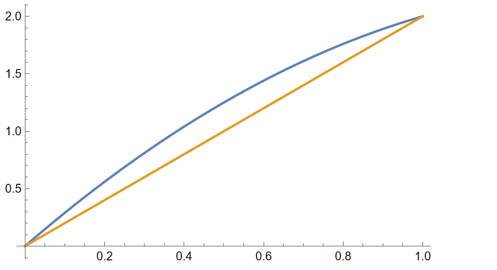

问题0:人民大学2025考研数学分析
设函数在上连续，在上可导，且证明：存在满足
1. 问题解答
如果利用中值定理，取，然后令。
- 此处蕴含一个结果是函数连续性，由于函数连续，并且所以对于当中的每一个都存在对应的 那么我们无非就是要证明等式
等价来说我们对这个式子进行因式分解，得到
这里我们希望左右式子可以直接成立，也就是
- 为什么这样的式子才可能成功，而不是说我们随便令取当中任何一个数，然后解出来对应的，比如然后解出。可是这样不行，因为我们凭什么能够保证给定的函数一定在满足呢？但是却是对任何给定的满足“问题0”条件的函数都成立，因为这样我们可以把看成是与这两条曲线的交点。这种交点的存在性可以用函数的连续性，以及连续性有关的推论得到。
那么根据，有可能吗？不一定。因为这两条曲线在区间的两个端点处重合，这样一来，中间就未必有交点。比如说如图如果

此时与在区间内部就不存在端点。
那么与函数就一定存在交点吗？一定存在，这是介值定理所决定的。令，那么于是一定存在一个零点，这个零点就是我们想要的。所以我们只需要令其中是当中给出的零点。那么带入到当中，等式一定成立，紧接着一定成立，从而根据Lagrange中值定理便得到
2. 类似的乘积类型的问题
问题2.1
设连续，在上可导，且证明：存在不同的，使得
模仿第一节，我们无非就是要寻找一个以及对应的使得根据Langrange中值定理满足把这个式子写成一个二元整系数多项式的方程，并化简得到然后我们排除相交的情况，因为只是两处端点相交的话会导致某些符合问题条件的函数与直线在区间上不交。考虑与的交点，构造函数，发现于是我们只要令为在区间上的根，那么一切吗满足问题要求的条件的函数都存在不同的，使得
此处还有第二种做法。如果我们采取把多元问题转换为一元问题的想法，如果我们随便取一个点由于可导，岂不是可以，然后在上使用中值定理存在于是我们只要验证一件事：满足“问题2.1”条件的函数，是否一定存在某个使得如果我们把右边式子看成是某个一元函数的导数为0的话，我们可以尝试用Rolle中值定理解决此问题。然后由于的原函数对我们而言是非常熟悉的，我们可以构造出这个函数满足，于是Rolle中值定理告诉我们一定存在这样一个。于是问题便解决了。
- 那么一开始的“问题0”可以通过证明存在一个使得来得到吗？至少通过Rolle中值定理是办不到的。
对于”问题2.1”我们可以把它抽象为一个命题：
命题2.2
设连续，在上可导，并且那么存在不同的，使得
- 一般情况下，直接运行“问题2.1”的做法，在代数上计算量就有点大了。不过我们总是可以通过对函数进行变换的方式，使得满足。那么根据之前的结论，一定存在这相当于是带入进去便可得到
- 我们可以把一开始的“问题0”当作是该问题的变形。令那么“问题0”当中的端点信息就变成了“命题2.2”版本下的端点信息于是自然存在两个不同的使得这就是等价于
根据数学归纳法，我们还可以进一步推广：
命题2.3
设连续，在上可导，并且那么存在个不同的点，使得
在推广命题中，我们其实只需要证明：当连续并且在上可微，那么会存在个不同的点，使得然后我们需要借助于归纳法来完成这件事。
然后我们发现，在归纳法的证明中，采用”问题2.1”的第二种证明方法会更适用于的情形。
首先的时候，因为“命题2.2”，因此成立。然后假设的时候命题成立，现在我们需要证明的时候命题也成立。
我们可以推广“问题2.1”的第二种证明，把问题变成，是否存在某个使得
因为只要这个式子成立，那么我们就可以考虑函数这个函数在上连续，上可导，并且对这个函数用归纳假设，由于于是根据归纳假设存在使得令那么 那么为什么一定成立？按照类似于“问题2.1”的证明逻辑，构造然后由于，根据Rolle中值定理的存在性可以被保证。于是的时候命题依旧成立。
3. 和的类型的问题
问题3.1
设连续，在上可导，且证明：存在不同的，使得
- 按照之前乘积类型的问题，类似的想法，我们无非就是需要寻找一个点使得，并且满足此时和第一节不同，这里由于端点因此，并没有对的取值提出任何要求。
问题3.2
设连续，在上可导，且证明：存在不同的，使得
首先我们把问题的目标转换为更对称的形式
如果我们把视为某个函数的导数在处的取值，那么我们是否可以把问题转换为”问题3.1”? 令然后验证导出，然后验证完全符合”问题3.1”的条件，于是存在因此问题得证。
问题3.3
设连续，在上可导，且证明：对任意存在不同的，使得
令满足，然后我们需要证明存在两个不同点使得按照先前的思路，我们可以考虑是否存在一个使得如果令则可以消去分母得到，从而解决问题。并且由于，由连续函数的介值性我们知道这样的一定是存在的。
命题3.4
设连续，在上可导，且证明：对任意和为1的个正实数存在不同的，使得
从“问题3.3”的特殊情形得到启发：
- 令于是存在使得
- 然后令于是存在使得
- 依次类推于是存在使得
- 最后一个点时候然后 最后把上面的结果求和得到而以上所有的取值都介于之间，因此由连续函数的介值定理保证的存在性，从而命题得证。
4. 借助导数的Darboux性解决问题
我们还可以从导数的Darboux定理入手，并且这种视角更通用更本质。
引理4.1:导数的Darboux定理
令为一个闭区间，在的内点上处处可微。那么函数的导数具有介值性：，，那么任意介于之间的，都存在一个使得。
从拓扑的角度上来说，介质性等价于：对任意子区间，经过导数后的像是一个区间。这比单纯说有连通性要更强一些。从下面这个例子更能看出二者强弱的区别：
例子4.2
整体上来说是一个区间。但是如果我们考虑那么我们会发现并不是一个区间。因此这个函数在上并不具备介值性。
认识到这一点以后，我们便发现“问题3.1”的证明根本没有那么tricky，而且根本不是存在一对满足问题中的结论，而是存在无数多对。
首先一定存在一个点使得，否则的话在之中导数处处为0，只能得到函数本身就是常函数，那么自然从而“问题3.1”是平凡的。（这一点可以借助Lagrange中值定理证明）
现在不妨假设。那么一定也存在一个不同点的点使得。否则，对整个成立，则根据Lagrange中值定理，这与“问题3.1”的端点信息矛盾。
- 这里不要用微积分基本定理，这个定理要求可积，但仅凭”问题3.1”的条件我们无法得到可积性。
假设。现在根据Darboux定理，我们知道一定存在使得。然后我们可以任取，根据Darboux定理，一定存在使得。然后取，根据Darboux定理一定存在使得。于是自然得到结论
把这个思路抽象成更为一般的情形：
命题4.3
设连续，上可导。令则
令那么。参照前文的证明，我们可以得到要么如若不然，在至少会在某处取到0，且既会取到正实数也会取到负实数。也就是说，后一种情况下一定是的内点。这等价于
在“命题4.3”的角度下来回望之前的问题：
- “问题2.1”乘积类型：上，函数的平均斜率为于是我们知道，要么，问题平凡要么是这个区间的内点。于是对于足够小的都有那么只要我取于是一定有就一定存在点使得(因为)因此显然有
- “命题2.2”乘积类型：此时我们也无需把一般情况转换为上的情况。,那么根据“命题4.3”，要么，此问题平凡，要么为区间的内点。对于后一种情况，对于足够小的都有那么只要我取于是一定有就一定存在点使得因此
- 对于“命题2.3”和的类型的一般情况：对于非平凡的情形，即为区间的内点。对于足够小的都有如果是偶数，那么我们可以找个使得从而使得如果为奇数。首先考虑Lagrange中值定理，存在某个使得。剩下的个点采用和偶数的情况一样的构造，最后也能得到。
- “问题3.1”加法的基本类型：对于非平凡的情况为的内点。于是只要取那么就一定有点使得从而得到
命题4.4
连续并且在上可微，并且满足令为中以为球心为半径的开球，函数满足并且：
- 当时,存在使得任意都有
- 时，存在使得任意都有
则存在互不相同的使得
- 此命题源自于b站网友”番茄黑化了”的帖子。原帖中的证明是构造性的，而此处我们从微分几何的角度来解释此如此设置条件的动机是什么。
- 我们还可以做一个简单推广。可以考虑然后其他条件不变，令，然后只是把改成也就是对的要求变成是在的开邻域上的函数，并且满足并且，存在球换成球。
首先根据“命题4.3”，如果，那么该命题平凡。因为任意互不相同的都会使得从而根据假设现在考虑非平凡的情况，为的内点，即存在足够小的使得。现在的问题就变成了寻找一个点满足：
- 两两不同
- 每个
只要满足以上三点，我们自然就能结合以上分析，存在对应的使得，并且由于两两不同，因此也必然两两不同。因此我们现在的关注重点就是的局部结构，即的局部结构。令我们就想知道在的邻域当中是否存在不属于的点，如果存在，那么这样的点就可以选做从而满足以上对的三点要求。
是什么？它是当中的一个维的超平面，法向量为。我们现在加强命题，是否可以保证至少有一个包含的邻域不包含在任何当中，这样一来就有无数多个点，即我们有无数多个符合要求的。
那么是什么？由于在成立，即它是行满秩的，于是是的正则值，于是由正则值定理（regular value theorem，参考^221c4f）告诉我们，它是一个维的光滑流形。然后它在处有唯一的切平面，该切平面的法向量为。那么现在问题就很简单了，想要不包含在任何当中，我们可以设想这两个曲面的法向量并不平行。这样一来，两个曲面就是横截相交，而不是一个包含另一个。令，若则必然满足约束也就是说就是这个线性方程的解空间，由于与线性无关，因此这个方程的秩为2,于是解空间为维的线性空间，即的一个真子空间。而我们知道，一个线性空间是不可能被其真子空间的有限并包含的，因此一定存在某个也就是说，并且。然后根据切空间的几何意义，对于切向量在上存在一条光滑曲线满足:
- 。 然后我们可以说明对于足够小的曲线。这样的曲线上的属于但不属于的点就是我们要找的值（无穷多个，且稠密）。令然后构造一个测试函数这个测试函数的作用是，如果则否则然后由于而恰好是即的分量之差，由于因此该差不可能为0，于是。那么极限的保号性告诉我们，存在某个使得当的时候不为0，从而不为零。 “ 那么只要那么对任意的均不为0，从而于是。那么我们只需要令，这样的就是我们要找的。
于是我们便可以说，只要与不平行，问题就迎刃而解了。那么究竟是不是这样呢？这个得看维度：
- 如果，由于这个向量当中至少会有三个分量，其中两个为剩余的位置上为。也就是说向量当中至少有一个分量上为，但是的个分量上任何位置都不为0，因此这两个向量绝不可能平行。
- 如果，由于此时，其法向量为。这个时候即便每个分量都不为0，也是有可能与平行。因此命题当中用了一个更强的限制条件这直接排除了与平行的可能性。
综上所述，如果存在邻域满足命题中的条件，那么当中存在无数多个满足我们要求的三个条件的点，于是问题得证。
站在”命题4.4”的高度上，前面的所有问题都如同砍瓜切菜一般简单：
- 对于”问题0”:
令，然后。然后由于并且于是根据“命题4.4”，存在使得于是问题得证。
- 对于”命题2.3”:
令然后以及。此时满足: ，然后如果，那么由于的每个分量都不为0，因此根据“命题4.4”结论成立。如果，那么由于也符合“命题4.4”，因此该命题结论也成立。
综上所述命题成立。
- 对于“问题3.1”：
令，。由于并且，于是根据“命题4.4”，问题解决。
- 对于“命题3.4”:
令，由于因此，。此外由于，因此当的时候每一个分量都不为0，当的时候因此无论那种情况，根据“命题4.4”，结论都成立。
问题4.5
设连续，在上可导，且满足。证明：存在互不相同的使得:
站在“命题4.4”的角度这个问题会非常简单。令此函数满足，然后根据“命题4.4”，问题结论显然成立。
问题4.6
设连续，在上可导，且满足。证明：存在互不相同的使得:
令此函数满足并且因此无论是或是都满足”命题4.4”对的要求，于是问题结论显然成立。
5. 借助Cauchy中值定理来解决问题
问题5.1
设连续，在上可导，且满足且。证明：存在互不相同的使得:
这种分子分母上都是变化的函数，如果采用前三节的思路，借助于Lagrange中值定理来把问题转换为，证明某个的存在性是徒劳的。不过这种分子分母都是函数的情况，我们可以考虑利用Cauchy中值定理来解决问题。
如果把看成是一种Cauchy中值定理的结果，那么相当于我们要找一个点使得另一方面然后还得满足问，这样的是存在的吗？
当然是存在的，只要利用介值性，令即可。
为了检验我们刚才的理解是否合理，现在来尝试一下推广的情况：
问题5.2：推广
设连续，在上可导，且满足且。证明：存在互不相同的使得:
按照我们的计划，需要找到两个点使得如果可以找到，那么根据每个分式分别的Cauchy中值定理，我们便可证明此问题。
根据”命题3.4”以及”问题5.1”的经验，我们要做的是消去分母的影响，从而最后做到直接对分子求和，从而使得结果为1。那么做法就很直接了，令从而使得三个分母于是问题解决。
命题5.3：进一步推广
设连续，在上可导，且满足且。证明：存在互不相同的使得:
- 只需要利用介值定理使得并且即可。